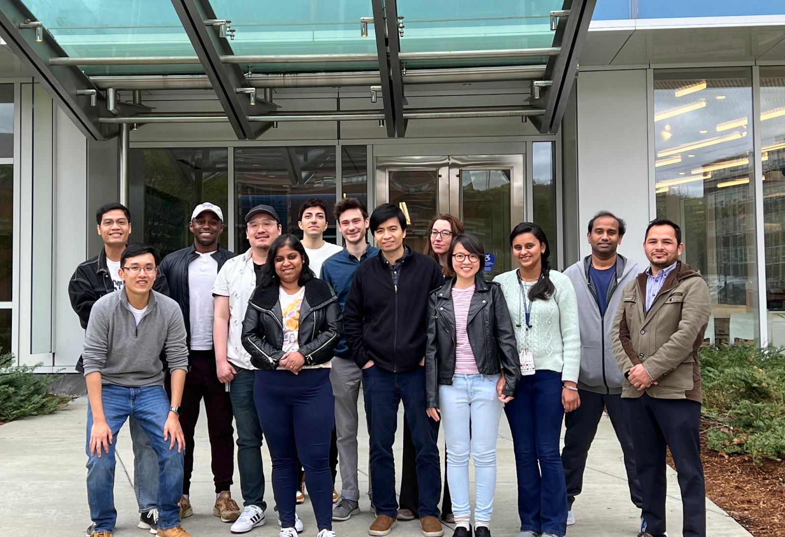

Dr. Thanh Nguyen is an associate professor in the Mechanical Engineering Department at the University of Connecticut and the principal investigator of the Nguyen Research Group. The research group focuses on developing the properties of natural and synthetic materials that can be applied to biological systems. More specifically, they integrate automated and adaptive technology to biomedical devices at the nano/micro scales. Nguyen obtained his PhD in Mechanical and Aerospace Engineering at Princeton University, working alongside Professor Michael McAlpine. At Princeton, Nguyen cultivated a passion for biointerfaced nanopiezoelectrics which he now continues to study in his lab. To complete postdoctoral research, he transitioned to MIT and worked on developing a technology that creates 3-D microstructures of biomaterials that could be applied to vaccine/drug delivery systems as well as medical implantation.
Currently, Nguyen and his research colleagues are focused on regenerative engineering with biomaterials, drug delivery systems, and nanotechnology. Ritopa Das, biomedical engineering PhD student and graduate research assistant at the Nguyen Research Group, has been working alongside Dr. Nguyen since 2017. Das explained that they are developing piezoelectric materials (those which can reversibly convert mechanical energy to electrical energy) to act as scaffolds for tissue regeneration in humans. By applying mechanical stimulation (such as through physiotherapy or through ultrasound vibrations), the produced electrical cues can attract cells into the scaffold and facilitate tissue healing.
The cycle of testing a piezoelectric material takes around two to three years. First, the group develops a biophysical profile of the material based on its durability and biodegradability. The group then moves on to biological testing in an artificial environment to analyze the material’s regenerative capabilities in a variety of different cells. Finally, the material is finally introduced into animals (typically mice), via surgery, and the effects on cell proliferation and tissue healing are monitored. Using histology, the group analyzes skin regeneration by checking for new growth at hair follicles. According to Das, tissue engineering like this will take around another decade to become more mainstream in bone and wound rehabilitation.
“The main takeaway from our research is that you should look at adding chemical stimulation or adding biological stimulation to your tissue in order to increase rehabilitation, but physical stimulation like electricity or mechanical forces are equally as important,” Das said.
Das also adds that while they have ultimately proved that this material can work to regenerate tissue, they must work on optimizing tissue scaffolding technology. For example, now that they know how effective ultrasound is when applied to the piezoelectric material, they must explore the specificity of what intensity, frequency, and charge must be applied to optimize tissue regeneration. They should also test the materials in more animals before this technology can be applied in clinical trials.
“For me, it [this project] was very interesting because I know a lot of people who have broken bones, I know a lot of people who have arthritis, knee pain, broken ligaments, broken tendons, so I can in a very tangible way see how my research can make the lives of these people better, ” Das said.
Professor Nguyen is open to inviting any interested undergraduate students to join his lab. You can reach him at nguyentd@uconn.edu or access the Nguyen Research Group’s website here.
The Nguyen Research Group (postdocs and graduate students) in 2023.